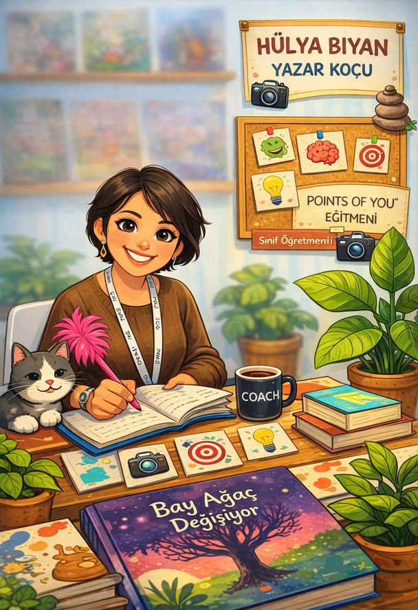

Hayalperest bir çocuktan çocuk kitabı yazarına uzanan yolculuk.

“Adım üstümde: Hülya…”
Merhaba, ben Hülya.
Size bir sır vereyim: ben çok yavaş okuyan, çok yavaş yazan bir çocuktum. Hatta bazı konuları zor öğrenirdim; akılda tutmam gereken bilgileri hafızamda tutmakta zorlanırdım. Büyüdükçe bu beni “Nasıl öğrenirim” sorusuyla baş başa bıraktı ve öğretmen olmamı sağladı. “Nasıl öğrenirim”den “nasıl öğretirim”e evrildi.
Ama çocukluğumun net hatırladığım bir yanı daha var ki o da benim yazar olmamı destekledi. Tam bir hayalperesttim. Adım üstümde; Hülya…
Çocukken kapı altlarından attığım küçük notlar, kendime yazdığım mektuplar, alıntılarla ve şiire benzer yazılarla dolu defterlerim, kenarlara çizilmiş karalamalar… Hepsi yazmaya dairmiş. Sadece “yazar” kime denir, onu çok sonra öğrendim.
Öyle ki, “Ne zaman yazmaya başladınız?” diye sorduklarında uzun süre “35 yaşımdan sonra” diye yanıtladım. Sonra fark ettim ki meğer çocukluğumdan beri yazıyormuşum.
Bugün 20 yılı aşkın bir süredir çocukların içindeyim. Hayal kurmayı, yazmayı, öğrenmeyi ve hayata farklı pencerelerden bakmayı seviyorum. Sanırım bugün burada sizlerle buluşmamı sağlayan da o hayalperest çocuk.
Yazı Güncesi böyle doğdu. Burada yazı yolculuğumu, yazılarımı ve etkinliklerimi paylaşırken sizlere de rehberlik etmek niyetindeyim. Bir elim hâlâ çocukların üzerinde olsun istiyorum; onlarla paylaşmak istediklerim var.
Umarım bu güncenin sayfalarını birlikte doldururuz. Yazı Güncesi'nin hikâyesini yazmama eşlik edersiniz.
Hoş geldiniz.
Atölye, söyleşi ve iş birlikleri için bana yazabilirsiniz.